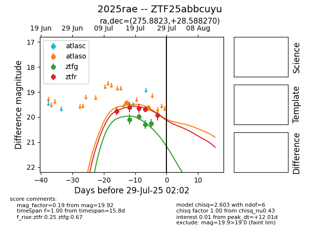

Target 2025rae at 2025-07-29 02:02, see:
FINK: fink-portal.org/2025rae
Lasair: lasair-ztf.lsst.ac.uk/objects/2025rae
ALeRCE: alerce.online/object/2025rae
TNS: wis-tns.org/object/2025rae
YSE: ziggy.ucolick.org/yse/transient_detail/2025rae
alt names
ZTF25abbcuyu (ztf,fink)
2025rae (tns,yse)
coordinates:
equatorial (ra, dec) = (275.8823,+28.58827)
galactic (l, b) = (56.3357,+18.24753)
photometry
last atlaso=19.63, ztfg=20.26, ztfr=19.92
2 atlaso, 4 ztfg, 5 ztfr detections
